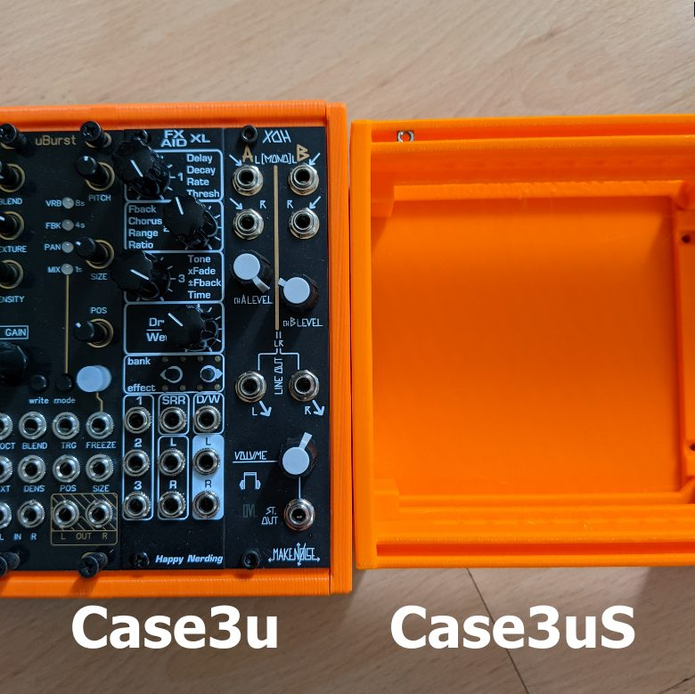
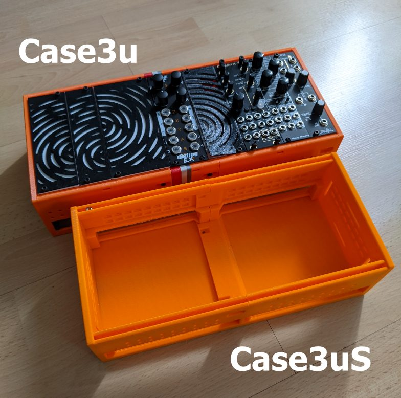
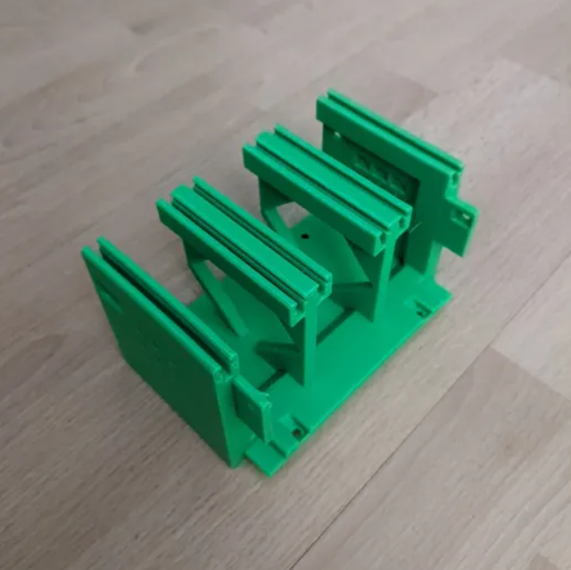
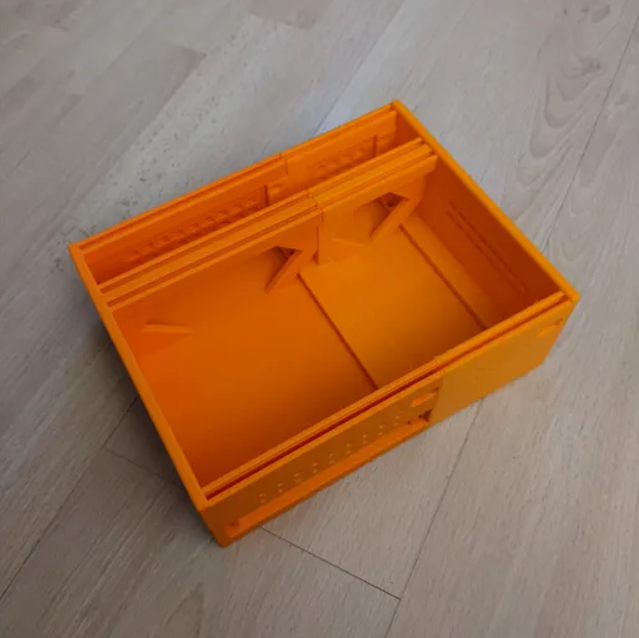
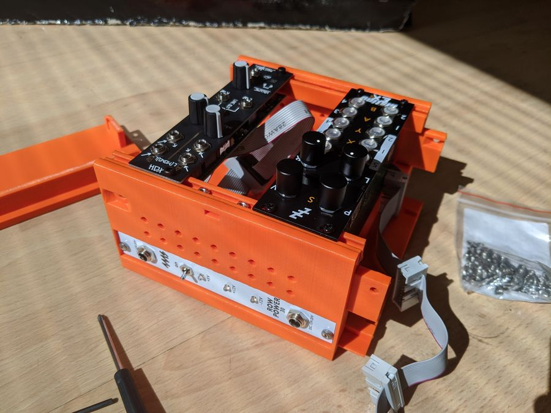
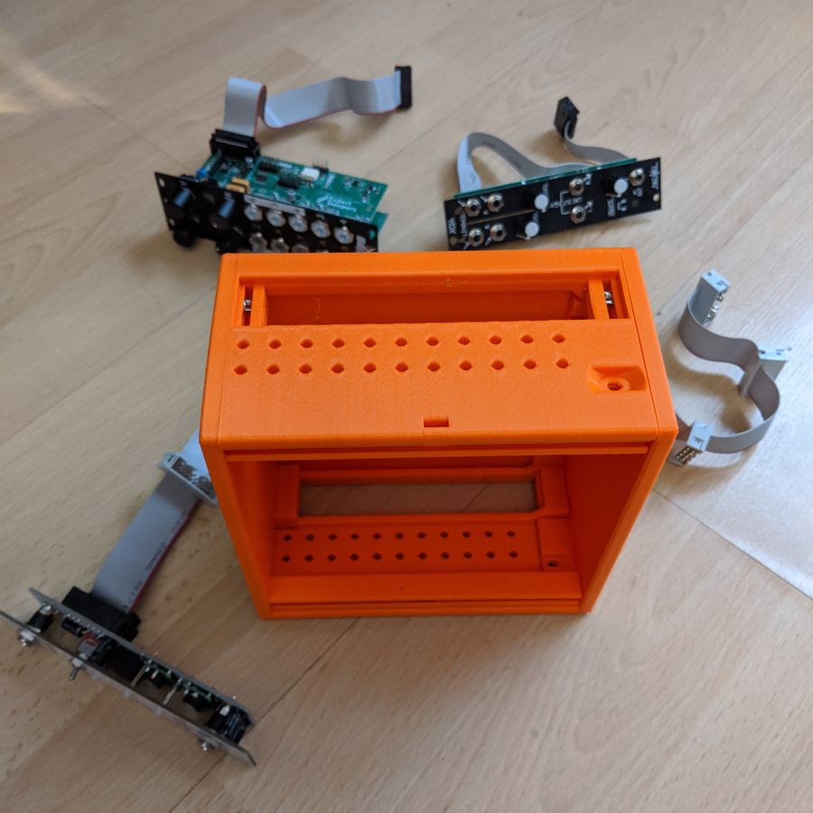
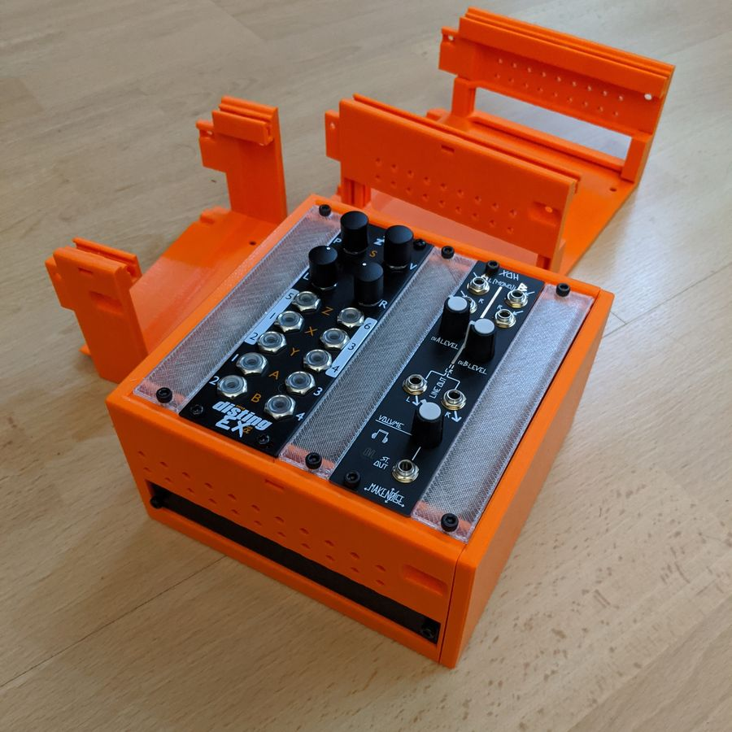
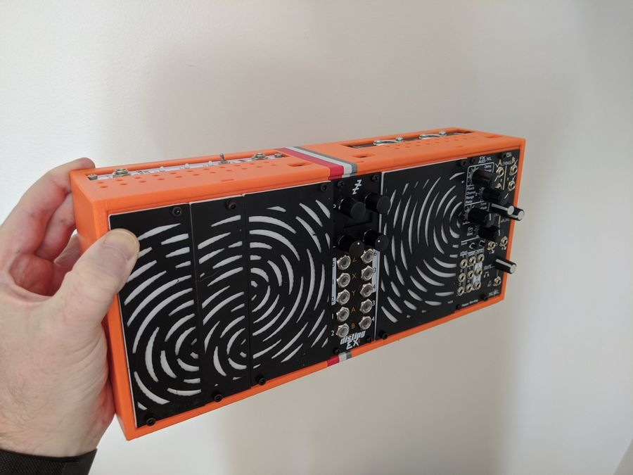

<title>Eurorack Case - Print Guide</title>
<style>
  :root {
    color-scheme: light dark;
    /* --- palette: light (warm off-white "paper", print-orange accent) --- */
    --paper:      #f4f0e8;
    --surface:    #fbf8f2;
    --surface-2:  #ece6d9;
    --ink:        #211f1c;
    --ink-soft:   #55504733;
    --muted:      #6e675a;
    --line:       #d8cfbd;
    --accent:     #e65a12;   /* print PLA orange */
    --accent-ink: #ffffff;
    --brass:      #a8853f;
    --ok:         #3f7d4e;   /* N = no breakout */
    --ok-bg:      #e2ecdd;
    --warn:       #b4531a;   /* B = breakout */
    --warn-bg:    #f3e2d3;
    --panel:      #1c1a17;   /* faceplate black, used as ink-on-orange chips */
    --shadow:     0 1px 2px rgba(40,30,15,.06), 0 8px 26px -12px rgba(40,30,15,.22);
    --radius:     10px;
    --maxw:       74rem;

    --ff-display: "Barlow Semi Condensed", "Arial Narrow", system-ui, sans-serif;
    --ff-body:    ui-sans-serif, system-ui, -apple-system, "Segoe UI", Roboto, sans-serif;
    --ff-mono:    ui-monospace, "SFMono-Regular", "Cascadia Code", Consolas, "Liberation Mono", monospace;
  }

  @media (prefers-color-scheme: dark) {
    :root {
      --paper:     #17140f;
      --surface:   #201c16;
      --surface-2: #2a251d;
      --ink:       #f0ead9;
      --muted:     #ab9f88;
      --line:      #3a3327;
      --accent:    #ff7a2e;
      --accent-ink:#1a1206;
      --brass:     #d0ac63;
      --ok:        #7fc08c;
      --ok-bg:     #21301f;
      --warn:      #f0a367;
      --warn-bg:   #3a2313;
      --panel:     #0e0c09;
      --shadow:    0 1px 2px rgba(0,0,0,.4), 0 10px 30px -14px rgba(0,0,0,.6);
    }
  }
  /* explicit toggle overrides (must win over media query, both directions) */
  :root[data-theme="light"] {
    --paper:#f4f0e8; --surface:#fbf8f2; --surface-2:#ece6d9; --ink:#211f1c;
    --muted:#6e675a; --line:#d8cfbd; --accent:#e65a12; --accent-ink:#fff;
    --brass:#a8853f; --ok:#3f7d4e; --ok-bg:#e2ecdd; --warn:#b4531a; --warn-bg:#f3e2d3;
    --panel:#1c1a17; --shadow:0 1px 2px rgba(40,30,15,.06),0 8px 26px -12px rgba(40,30,15,.22);
  }
  :root[data-theme="dark"] {
    --paper:#17140f; --surface:#201c16; --surface-2:#2a251d; --ink:#f0ead9;
    --muted:#ab9f88; --line:#3a3327; --accent:#ff7a2e; --accent-ink:#1a1206;
    --brass:#d0ac63; --ok:#7fc08c; --ok-bg:#21301f; --warn:#f0a367; --warn-bg:#3a2313;
    --panel:#0e0c09; --shadow:0 1px 2px rgba(0,0,0,.4),0 10px 30px -14px rgba(0,0,0,.6);
  }

  * { box-sizing: border-box; }
  html { -webkit-text-size-adjust: 100%; }
  body {
    margin: 0;
    background: var(--paper);
    color: var(--ink);
    font-family: var(--ff-body);
    font-size: clamp(15px, 0.65vw + 13px, 17px);
    line-height: 1.62;
    letter-spacing: .002em;
  }
  .wrap { max-width: var(--maxw); margin: 0 auto; padding: 0 clamp(1rem, 4vw, 2.5rem); }

  a { color: var(--accent); text-underline-offset: 2px; text-decoration-thickness: 1px; }

  h1, h2, h3 { font-family: var(--ff-display); font-weight: 600; line-height: 1.08; text-wrap: balance; margin: 0; }
  h2 { font-size: clamp(1.5rem, 2.6vw, 2.05rem); letter-spacing: .004em; }
  h3 { font-size: 1.14rem; letter-spacing: .01em; }

  .eyebrow {
    font-family: var(--ff-mono);
    font-size: .72rem; letter-spacing: .22em; text-transform: uppercase;
    color: var(--accent); font-weight: 600; margin: 0 0 .55rem;
  }

  code, .mono { font-family: var(--ff-mono); }

  /* ---------- header / hero ---------- */
  header.hero {
    position: relative;
    background:
      linear-gradient(180deg, color-mix(in oklab, var(--panel) 92%, black) 0%, var(--panel) 100%);
    color: #efe7d5;
    overflow: hidden;
    border-bottom: 3px solid var(--accent);
  }
  /* faceplate vent-hole dot texture */
  header.hero::before {
    content: ""; position: absolute; inset: 0;
    background-image: radial-gradient(rgba(255,255,255,.06) 1.4px, transparent 1.5px);
    background-size: 20px 20px; background-position: 6px 6px;
    mask: linear-gradient(90deg, transparent, #000 30%, #000 100%);
    pointer-events: none;
  }
  .hero-inner { position: relative; padding: clamp(2.4rem, 6vw, 4rem) 0 clamp(1.8rem, 4vw, 2.6rem); }
  .hero .kicker {
    font-family: var(--ff-mono); font-size: .72rem; letter-spacing: .28em;
    text-transform: uppercase; color: var(--accent); font-weight: 600;
    display: inline-flex; align-items: center; gap: .6rem; margin-bottom: 1.1rem;
  }
  .hero .kicker::before { content:""; width: 26px; height: 2px; background: var(--accent); display:inline-block; }
  .hero h1 {
    font-size: clamp(2.3rem, 6.5vw, 4.4rem); font-weight: 600;
    letter-spacing: .01em; margin: 0 0 .7rem; color: #f7f0e0;
  }
  .hero h1 .thin { color: var(--brass); font-weight: 400; }
  .hero p.lede { max-width: 46ch; color: #cabfa8; font-size: 1.08rem; margin: 0; }

  /* filename decoder */
  .decoder {
    margin-top: clamp(1.8rem, 4vw, 2.6rem);
    background: rgba(0,0,0,.28);
    border: 1px solid rgba(255,255,255,.09);
    border-radius: var(--radius);
    padding: 1.25rem 1.25rem 1.4rem;
  }
  .decoder .lbl { font-family: var(--ff-mono); font-size:.68rem; letter-spacing:.18em; text-transform:uppercase; color:#9c927d; margin-bottom:.85rem; }
  .fn {
    display: flex; flex-wrap: wrap; gap: .4rem .35rem; align-items: stretch;
    font-family: var(--ff-mono); font-size: clamp(.82rem, 2.3vw, 1.15rem);
  }
  .seg { display: flex; flex-direction: column; align-items: center; gap: .4rem; }
  .seg .tok {
    padding: .35em .6em; border-radius: 6px; font-weight: 600; white-space: nowrap;
    background: rgba(255,255,255,.06); color: #efe7d5; border: 1px solid rgba(255,255,255,.09);
  }
  .seg .tag {
    font-size: .58rem; letter-spacing: .12em; text-transform: uppercase;
    color: #8f8571; text-align: center; line-height: 1.25; max-width: 11ch;
  }
  .seg.c-case .tok { background: var(--accent); color: var(--accent-ink); border-color: transparent; }
  .seg.c-bk   .tok { color: #ffd0ac; border-color: #6b4326; }
  .seg.c-opt  .tok { border-style: dashed; color: #c9bfa8; }
  .seg.c-pos  .tok { color: var(--brass); border-color: #5c4a24; }
  .sep { align-self: flex-start; color: #6b6252; padding: .35em .05em; font-weight: 700; }
  .opt-note { margin-top:.9rem; font-family: var(--ff-body); font-size:.82rem; color:#9c927d; }

  /* ---------- section rhythm ---------- */
  main section { padding: clamp(2.6rem, 6vw, 4rem) 0; border-bottom: 1px solid var(--line); }
  main section:last-of-type { border-bottom: 0; }
  .sec-head { margin-bottom: 1.8rem; }
  .sec-head p.sub { color: var(--muted); max-width: 62ch; margin: .5rem 0 0; }

  /* callout: the golden rule */
  .rule {
    display: grid; grid-template-columns: auto 1fr; gap: 1rem 1.2rem; align-items: center;
    background: var(--surface); border: 1px solid var(--line); border-left: 4px solid var(--accent);
    border-radius: var(--radius); padding: 1.15rem 1.35rem; box-shadow: var(--shadow);
  }
  .rule .num { font-family: var(--ff-display); font-size: 2.2rem; font-weight: 600; color: var(--accent); line-height: 1; }
  .rule strong { font-family: var(--ff-display); font-size: 1.15rem; letter-spacing:.01em; }
  .rule p { margin: .25rem 0 0; color: var(--muted); font-size: .95rem; }

  /* ---------- variable glossary ---------- */
  .vars { display: grid; grid-template-columns: repeat(auto-fit, minmax(15rem, 1fr)); gap: 1rem; }
  .vcard { background: var(--surface); border: 1px solid var(--line); border-radius: var(--radius); padding: 1.15rem 1.2rem 1.25rem; box-shadow: var(--shadow); }
  .vcard h3 { display:flex; align-items:baseline; gap:.55rem; margin-bottom:.5rem; }
  .vcard h3 .pos { font-family: var(--ff-mono); font-size:.6rem; letter-spacing:.12em; text-transform:uppercase; color:var(--muted); font-weight:500; }
  .vcard p { margin: 0; color: var(--muted); font-size: .92rem; }
  .chips { display: flex; flex-wrap: wrap; gap: .4rem; margin: .7rem 0 .1rem; }
  .chip {
    font-family: var(--ff-mono); font-size: .74rem; font-weight: 600; letter-spacing: .02em;
    padding: .2em .55em; border-radius: 5px; border: 1px solid var(--line); background: var(--surface-2);
    display:inline-flex; gap:.4em; align-items:baseline;
  }
  .chip small { font-family: var(--ff-body); font-weight: 400; letter-spacing: 0; color: var(--muted); font-size:.92em; }
  .chip.ok   { color: var(--ok);   background: var(--ok-bg);   border-color: color-mix(in oklab, var(--ok) 40%, var(--line)); }
  .chip.warn { color: var(--warn); background: var(--warn-bg); border-color: color-mix(in oklab, var(--warn) 40%, var(--line)); }
  .chip.acc  { color: var(--accent); border-color: color-mix(in oklab, var(--accent) 45%, var(--line)); }

  /* ---------- build-a-row strip ---------- */
  .rowdemo { display:flex; flex-wrap: wrap; align-items: stretch; gap:.5rem; margin-top: 1.4rem; }
  .block {
    flex: 1 1 auto; min-width: 4.5rem; border-radius: 8px; padding: .9rem .8rem;
    display:flex; flex-direction:column; justify-content:space-between; gap:.6rem;
    background: var(--surface); border:1px solid var(--line); box-shadow: var(--shadow);
  }
  .block .role { font-family: var(--ff-display); font-weight:600; letter-spacing:.02em; }
  .block .hp   { font-family: var(--ff-mono); font-size:.72rem; color: var(--muted); font-variant-numeric: tabular-nums; }
  .block.end   { border-top: 4px solid var(--accent); }
  .block.mid   { border-top: 4px solid var(--brass); flex-grow: 1.4; }
  .block.rep   { position: relative; }
  .plus { align-self:center; color: var(--muted); font-weight:700; font-family:var(--ff-mono); }
  .rowdemo-note { margin-top:.9rem; font-size:.85rem; color:var(--muted); }
  .rowdemo-note code { background: var(--surface-2); padding:.1em .4em; border-radius:4px; border:1px solid var(--line); }

  /* ---------- family gallery ---------- */
  .fams { display: grid; grid-template-columns: repeat(auto-fill, minmax(17rem, 1fr)); gap: 1.15rem; }
  .fam { background: var(--surface); border:1px solid var(--line); border-radius: var(--radius); overflow:hidden; box-shadow: var(--shadow); display:flex; flex-direction:column; }
  .fam .ph { aspect-ratio: 4 / 3; background: var(--surface-2); overflow:hidden; border-bottom:1px solid var(--line); }
  .fam .ph img { width:100%; height:100%; object-fit: cover; display:block; }
  .fam .body { padding: .95rem 1.05rem 1.15rem; display:flex; flex-direction:column; gap:.5rem; flex:1; }
  .fam h3 { font-family: var(--ff-mono); font-size: 1rem; letter-spacing: 0; }
  .fam .tagline { font-size:.88rem; color: var(--muted); margin:0; flex:1; }
  .fam .meta { display:flex; flex-wrap:wrap; gap:.35rem; }
  .badge { font-family: var(--ff-mono); font-size:.66rem; letter-spacing:.03em; padding:.18em .5em; border-radius:4px; border:1px solid var(--line); background: var(--surface-2); color: var(--muted); }
  .badge.rec { background: var(--accent); color: var(--accent-ink); border-color: transparent; font-weight:600; }

  /* full-bleed photo band */
  .band { display:grid; grid-template-columns: repeat(auto-fit, minmax(15rem, 1fr)); gap: 1rem; margin-top:1.6rem; }
  .shot { border-radius: var(--radius); overflow:hidden; border:1px solid var(--line); box-shadow: var(--shadow); background:var(--surface-2); }
  .shot img { width:100%; height:100%; object-fit: cover; display:block; aspect-ratio: 3/2; }
  /* labelled comparison shots: show the WHOLE image so edge labels are not cropped */
  .shot.whole img { object-fit: contain; aspect-ratio: 16/10; padding: .5rem; background: var(--surface-2); }
  .shot figcaption { padding:.6rem .8rem; font-size:.82rem; color: var(--muted); background: var(--surface); border-top:1px solid var(--line); }
  figure { margin: 0; }
  /* white filename label overlaid on the image itself */
  .shot.labelled { position: relative; }
  .shot.labelled .imglabel {
    position: absolute; left: .6rem; bottom: .6rem; z-index: 2;
    font-family: var(--ff-mono); font-weight: 600;
    font-size: clamp(.72rem, 2.2vw, .95rem); letter-spacing: .01em;
    color: #fff; padding: .28em .6em; border-radius: 6px;
    background: rgba(20,16,10,.62); backdrop-filter: blur(3px);
    box-shadow: 0 1px 6px rgba(0,0,0,.35);
    text-shadow: 0 1px 2px rgba(0,0,0,.55);
  }

  /* ---------- width table ---------- */
  .tablewrap { overflow-x: auto; border:1px solid var(--line); border-radius: var(--radius); box-shadow: var(--shadow); background: var(--surface); }
  table { border-collapse: collapse; width: 100%; min-width: 40rem; font-size: .9rem; }
  thead th { font-family: var(--ff-mono); font-size:.68rem; letter-spacing:.1em; text-transform:uppercase; color:var(--muted); text-align:left; padding:.85rem 1rem; border-bottom:2px solid var(--line); font-weight:600; white-space:nowrap; }
  tbody td { padding:.7rem 1rem; border-bottom:1px solid var(--line); vertical-align:top; }
  tbody tr:last-child td { border-bottom:0; }
  tbody tr:hover { background: color-mix(in oklab, var(--accent) 6%, transparent); }
  td.fam-name { font-family: var(--ff-mono); font-weight:600; color: var(--ink); white-space:nowrap; }
  td.widths { font-family: var(--ff-mono); font-variant-numeric: tabular-nums; color: var(--muted); }
  .vtag { display:inline-block; font-family:var(--ff-mono); font-size:.72rem; color:var(--brass); }

  /* ---------- checklist ---------- */
  .steps { list-style:none; counter-reset: s; padding:0; margin:1.4rem 0 0; display:grid; gap:.8rem; }
  .steps li { counter-increment: s; display:grid; grid-template-columns: auto 1fr; gap: .95rem; align-items:start; background: var(--surface); border:1px solid var(--line); border-radius: var(--radius); padding: .9rem 1.1rem; }
  .steps li::before { content: counter(s, decimal-leading-zero); font-family: var(--ff-mono); font-size:.8rem; font-weight:600; color: var(--accent-ink); background: var(--accent); width:1.9rem; height:1.9rem; border-radius:6px; display:grid; place-items:center; font-variant-numeric: tabular-nums; }
  .steps li b { font-family: var(--ff-display); font-weight:600; }
  .steps li span { color: var(--muted); }

  .tip { display:flex; gap:.8rem; margin-top:1.5rem; padding:1rem 1.2rem; background: var(--surface-2); border-radius: var(--radius); border:1px dashed var(--line); font-size:.92rem; }
  .tip .t { font-family: var(--ff-mono); font-size:.66rem; letter-spacing:.14em; text-transform:uppercase; color: var(--accent); font-weight:600; white-space:nowrap; padding-top:.15rem; }

  /* other-files grid */
  .other { display:grid; grid-template-columns: repeat(auto-fit,minmax(16rem,1fr)); gap:.9rem; margin-top:1.2rem; }
  .ocard { background:var(--surface); border:1px solid var(--line); border-radius: var(--radius); padding:1rem 1.1rem; }
  .ocard h3 { font-family: var(--ff-mono); font-size:.92rem; margin-bottom:.5rem; color:var(--accent); }
  .ocard p { margin:0; font-size:.86rem; color:var(--muted); }
  .ocard .fn-ex { font-family: var(--ff-mono); font-size:.78rem; color:var(--ink); display:block; margin-bottom:.15rem; }

  footer { padding: 2.4rem 0 3rem; color: var(--muted); font-size:.85rem; }
  footer .wrap { display:flex; flex-wrap:wrap; gap:.5rem 1.5rem; justify-content:space-between; align-items:baseline; }

  .theme-toggle {
    position: fixed; top: .9rem; right: .9rem; z-index: 20;
    font-family: var(--ff-mono); font-size:.68rem; letter-spacing:.1em; text-transform:uppercase;
    background: rgba(0,0,0,.35); color:#efe7d5; border:1px solid rgba(255,255,255,.18);
    padding:.5em .8em; border-radius:6px; cursor:pointer; backdrop-filter: blur(6px);
  }
  .theme-toggle:hover { border-color: var(--accent); color: var(--accent); }
  :focus-visible { outline: 2px solid var(--accent); outline-offset: 2px; border-radius: 3px; }

  @media (max-width: 34rem) {
    .rule { grid-template-columns: 1fr; }
    .rule .num { font-size: 1.7rem; }
  }
  @media (prefers-reduced-motion: no-preference) {
    .fam, .vcard, .block { transition: transform .18s ease, box-shadow .18s ease; }
    .fam:hover, .vcard:hover { transform: translateY(-2px); }
  }
</style>

<button class="theme-toggle" id="tt" aria-label="Toggle light or dark theme">Theme</button>

<header class="hero">
  <div class="wrap hero-inner">
    <div class="kicker">3D-Printed Eurorack Case &middot; Print Guide</div>
    <h1>Read the filename,<br><span class="thin">print the right block.</span></h1>
    <p class="lede">Every STL name is a recipe. Decode the underscores and you know exactly what each block is &mdash; and which blocks fit together.</p>

    <div class="decoder">
      <div class="lbl">Anatomy of a filename</div>
      <div class="fn">
        <div class="seg c-case"><span class="tok">case3uS</span><span class="tag">Case family</span></div>
        <span class="sep">_</span>
        <div class="seg c-bk"><span class="tok">B</span><span class="tag">Breakout hole</span></div>
        <span class="sep">_</span>
        <div class="seg c-opt"><span class="tok">1UI</span><span class="tag">Intellijel 1U (optional)</span></div>
        <span class="sep">_</span>
        <div class="seg c-opt"><span class="tok">v1</span><span class="tag">Version</span></div>
        <span class="sep">_</span>
        <div class="seg"><span class="tok">26hp</span><span class="tag">Width</span></div>
        <span class="sep">_</span>
        <div class="seg c-pos"><span class="tok">left</span><span class="tag">Position</span></div>
      </div>
      <p class="opt-note">Optional fields (like <code>1UI</code>) simply drop out &mdash; a plain block reads <code>case3uS_N_v1_12hp_middle.stl</code>.</p>
    </div>
  </div>
</header>

<main>
  <div class="wrap">

    <!-- GOLDEN RULE -->
    <section>
      <div class="sec-head">
        <p class="eyebrow">The one rule that matters</p>
        <h2>Only combine blocks from the same case family</h2>
      </div>
      <div class="rule">
        <div class="num">=</div>
        <div>
          <strong>The first field is the family &mdash; it must match across every block in a row.</strong>
          <p>The end-cap adapters are shaped uniquely per family, so a <code>case3uS</code> left will <em>not</em> mate with a <code>case3u</code> middle. Pick one family and stay in it. (Versions within a family <em>are</em> cross-compatible &mdash; a v1 plugs into a v2.)</p>
        </div>
      </div>
    </section>

    <!-- VARIABLES -->
    <section>
      <div class="sec-head">
        <p class="eyebrow">The fields</p>
        <h2>What each part of the name means</h2>
        <p class="sub">Fields are joined by underscores in a fixed order: <code class="mono">&lt;case&gt;_&lt;breakout&gt;[_1UI]_&lt;version&gt;_&lt;width&gt;hp_&lt;position&gt;</code></p>
      </div>
      <div class="vars">
        <div class="vcard">
          <h3>Case family <span class="pos">field 1</span></h3>
          <p>The block family. <strong>Never mix families</strong> &mdash; adapters are unique to each. See the family gallery below for the full list.</p>
          <div class="chips">
            <span class="chip acc">case3uS <small>slim</small></span>
            <span class="chip">case3u</span>
            <span class="chip">caseDeep&hellip;</span>
            <span class="chip">case4uIS</span>
          </div>
        </div>
        <div class="vcard">
          <h3>Breakout <span class="pos">field 2</span></h3>
          <p>Whether the block has a rear 4&nbsp;HP breakout slot for tucking away non-performance modules (power, MIDI).</p>
          <div class="chips">
            <span class="chip warn">B <small>4HP breakout</small></span>
            <span class="chip ok">N <small>none</small></span>
            <span class="chip warn">WB <small>widened +3mm</small></span>
          </div>
        </div>
        <div class="vcard">
          <h3>1UI <span class="pos">optional</span></h3>
          <p>Present only on blocks shaped to accept <strong>Intellijel 1U</strong> modules. Absent on standard blocks.</p>
          <div class="chips">
            <span class="chip acc">1UI <small>present</small></span>
            <span class="chip"><small>&mdash; absent = standard</small></span>
          </div>
        </div>
        <div class="vcard">
          <h3>Version <span class="pos">vN</span></h3>
          <p>Design revision. Higher is newer and includes minor improvements. Within a family, versions plug together freely &mdash; prefer the highest available.</p>
          <div class="chips">
            <span class="chip">v1</span>
            <span class="chip">v2</span>
          </div>
        </div>
        <div class="vcard">
          <h3>Width <span class="pos">Nhp</span></h3>
          <p>How wide the block is. 1&nbsp;HP = 5.08&nbsp;mm. <code>0hp</code> is a minimal end cap with no module space &mdash; add to a middle block to turn it into a right block and handy as a quick fit-test print.</p>
          <div class="chips">
            <span class="chip">6</span><span class="chip">8</span><span class="chip">10</span>
            <span class="chip">12</span><span class="chip">16</span><span class="chip">26 hp</span>
          </div>
        </div>
        <div class="vcard">
          <h3>Position <span class="pos">field last</span></h3>
          <p>Where the block sits in the row. Use one <code>left</code>, one <code>right</code>, and any number of <code>middle</code> sections between them.</p>
          <div class="chips">
            <span class="chip acc">left</span>
            <span class="chip">middle <small>&times; 0+</small></span>
            <span class="chip acc">right</span>
          </div>
        </div>
      </div>
    </section>

    <!-- BUILD A ROW -->
    <section>
      <div class="sec-head">
        <p class="eyebrow">Assembly</p>
        <h2>How a row goes together</h2>
        <p class="sub">A finished row is always one left cap, any number of repeatable middles, and one right cap &mdash; all from the same family, with matching breakout and version choices.</p>
      </div>
      <div class="rowdemo" aria-hidden="true">
        <div class="block end"><span class="role">Left</span><span class="hp">26hp</span></div>
        <span class="plus">+</span>
        <div class="block mid rep"><span class="role">Middle</span><span class="hp">12hp</span></div>
        <span class="plus">+</span>
        <div class="block mid rep"><span class="role">Middle</span><span class="hp">12hp</span></div>
        <span class="plus">+</span>
        <div class="block end"><span class="role">Right</span><span class="hp">26hp</span></div>
      </div>
      <p class="rowdemo-note">
        Total width = left + &sum;&nbsp;middles + right. The example above is
        <code>case3uS_N_v1_26hp_left</code> + <code>&hellip;12hp_middle</code> &times;2 + <code>&hellip;26hp_right</code> = <strong>76&nbsp;HP</strong>.
        For the smallest possible case, pair a <code>26hp_left</code> straight into a <code>0hp_right</code>.
      </p>
      <div class="tip">
        <span class="t">Designer's tip</span>
        <span>Print an end pair <em>first</em> (a left and the <code class="mono">0hp_right</code>) to confirm they mate cleanly &mdash; before committing to the slow middle prints.</span>
      </div>
    </section>

    <!-- FAMILY GALLERY -->
    <section>
      <div class="sec-head">
        <p class="eyebrow">Know your case</p>
        <h2>The case families</h2>
        <p class="sub">The side-by-side shots below show the two 3U families next to each other &mdash; the original <code>case3u</code> is chunkier; <code>case3uS</code> is the slimmer, recommended default. The Deep and 4U variants share the same block grammar.</p>
      </div>

      <div class="band" style="margin-top:0;margin-bottom:1.6rem;">
        <figure class="shot whole"><figcaption><b>case3u</b> (left) vs <b>case3uS</b> (right) &mdash; the S drops the 6&nbsp;mm top/bottom border for a slimmer stack.</figcaption></figure>
        <figure class="shot whole"><figcaption>Assembled <b>case3u</b> above an empty <b>case3uS</b> shell.</figcaption></figure>
      </div>

      <div class="fams">
        <article class="fam">
          <div class="body">
            <h3>case3uS</h3>
            <p class="tagline">Slim 3U. The recommended starting point &mdash; a touch narrower than the original, so rows sit closer when bolted together.</p>
            <div class="meta"><span class="badge rec">Recommended</span><span class="badge">v1</span><span class="badge">B / N / WB</span><span class="badge">1UI opts</span></div>
          </div>
        </article>
        <article class="fam">
          <div class="body">
            <h3>case3u</h3>
            <p class="tagline">The original, fatter 3U case. Fully supported, with the widened-breakout (WB) option for chunky modules.</p>
            <div class="meta"><span class="badge">v2</span><span class="badge">B / N / WB</span></div>
          </div>
        </article>
        <article class="fam">
          <div class="body">
            <h3>caseDeep3uS</h3>
            <p class="tagline">Slim <em>and</em> deep 3U (~84&nbsp;mm internal). Ends take long threaded rails; good for deeper modules.</p>
            <div class="meta"><span class="badge">v1</span><span class="badge">B / N / WB</span><span class="badge">1UI opts</span></div>
          </div>
        </article>
        <article class="fam">
          <div class="body">
            <h3>caseDeep3u</h3>
            <p class="tagline">The original 3U made deeper internally, for modules that need the extra clearance.</p>
            <div class="meta"><span class="badge">v2</span><span class="badge">B / N</span></div>
          </div>
        </article>
        <article class="fam">
          <div class="body">
            <h3>case4uIS</h3>
            <p class="tagline">A 4U case with built-in Intellijel 1U support. All blocks in this family are 1U-capable.</p>
            <div class="meta"><span class="badge">v1</span><span class="badge">B / N</span><span class="badge">1U native</span></div>
          </div>
        </article>
        <article class="fam">
          <div class="body">
            <h3>caseDeep4uIS</h3>
            <p class="tagline">The 4U Intellijel case, deepened &mdash; added by request for deeper 4U builds.</p>
            <div class="meta"><span class="badge">v1</span><span class="badge">B / N</span><span class="badge">1U native</span></div>
          </div>
        </article>
      </div>

      <div class="band">
        <figure class="shot whole labelled"><span class="imglabel">case3uS_N_1UI_v1_14hp_middle</span><figcaption>A <b>case3uS</b> block with the <b>1UI</b> Intellijel 1U rails.</figcaption></figure>
        <figure class="shot whole labelled"><span class="imglabel">case4UIs</span><figcaption>A <b>case4uIS</b> shell &mdash; the 4U family with native Intellijel 1U support.</figcaption></figure>
      </div>
    </section>

    <!-- FEATURES / PHOTOS -->
    <section>
      <div class="sec-head">
        <p class="eyebrow">What you're printing</p>
        <h2>Features across the range</h2>
        <p class="sub">Common details you'll see on the blocks &mdash; the rear breakout slot, ribbon-cable feed-throughs between rows, and the finished case with vent-hole side rails.</p>
      </div>
      <div class="band">
        <figure class="shot"><figcaption>A <b>B</b> block's rear 4&nbsp;HP breakout &mdash; here holding a row-power module out of the performance area.</figcaption></figure>
        <figure class="shot"><figcaption>Empty breakout slots double as cable feed-throughs between bolted rows.</figcaption></figure>
        <figure class="shot"><figcaption>Finished blocks: M3-compatible vent holes on the sides bolt mods on or rows together.</figcaption></figure>
        <figure class="shot"><figcaption>Bonus <b>blank</b> panels (1&ndash;20&nbsp;HP) with optional circle stencils for two-colour fronts.</figcaption></figure>
      </div>
    </section>

    <!-- WIDTH TABLE -->
    <section>
      <div class="sec-head">
        <p class="eyebrow">Reference</p>
        <h2>Widths available per family</h2>
        <p class="sub">End caps are essentially always 26&nbsp;HP (plus a 0&nbsp;HP stub right). The breakout column shows which variants exist &mdash; some widths only live inside the family <code>.zip</code>.</p>
      </div>
      <div class="tablewrap">
        <table>
          <thead>
            <tr><th>Family</th><th>Ver</th><th>End caps</th><th>Middle widths (HP)</th><th>Breakout variants</th></tr>
          </thead>
          <tbody>
            <tr><td class="fam-name">case3uS</td><td><span class="vtag">v1</span></td><td class="widths">26 &middot; 0 (right stub)</td><td class="widths">6 8 10 12 16 20 24 26</td><td>N &middot; B/WB (26) &middot; 1UI 14/20/24/26</td></tr>
            <tr><td class="fam-name">case3u</td><td><span class="vtag">v2</span></td><td class="widths">26 &middot; 0 (right stub)</td><td class="widths">6 8 10 12 16 20 24 26</td><td>N &middot; B/WB on 26</td></tr>
            <tr><td class="fam-name">caseDeep3uS</td><td><span class="vtag">v1</span></td><td class="widths">26 &middot; 0 (right stub)</td><td class="widths">6 8 10 12 16 20 24 26</td><td>N &middot; B/WB (26) &middot; 1UI 20/24/26</td></tr>
            <tr><td class="fam-name">caseDeep3u</td><td><span class="vtag">v2</span></td><td class="widths">26</td><td class="widths">26</td><td>N &middot; B on 26</td></tr>
            <tr><td class="fam-name">case4uIS</td><td><span class="vtag">v1</span></td><td class="widths">26 &middot; 16 left &middot; 0 stub</td><td class="widths">16 18 20 24 26</td><td>N &middot; B on 26 &middot; all 1U-native</td></tr>
            <tr><td class="fam-name">caseDeep4uIS</td><td><span class="vtag">v1</span></td><td class="widths">26 &middot; 18 left &middot; 0 stub</td><td class="widths">18 20 24 26</td><td>N &middot; B on 26 &middot; all 1U-native</td></tr>
          </tbody>
        </table>
      </div>
      <p class="rowdemo-note">Full sets for each family live in <code>case3u.zip</code>, <code>case3uS.zip</code>, <code>caseDeep3uS.zip</code>, <code>case4uIS.zip</code> and <code>caseDeep4uIS.zip</code> &mdash; unzip the one matching your chosen family.</p>
    </section>

    <!-- CHECKLIST -->
    <section>
      <div class="sec-head">
        <p class="eyebrow">Decide fast</p>
        <h2>Quick decision checklist</h2>
      </div>
      <ol class="steps">
        <li><div><b>Pick one case family.</b> <span>Slim <code class="mono">case3uS</code> is the default. Choose a <code class="mono">Deep</code> variant for &gt;67&nbsp;mm depth, or a <code class="mono">4uIS</code> variant for 4U with Intellijel 1U support.</span></div></li>
        <li><div><b>Choose breakout or not.</b> <span><code class="mono">B</code> (or <code class="mono">WB</code> for fat modules) for a rear slot, else <code class="mono">N</code>.</span></div></li>
        <li><div><b>Need Intellijel 1U?</b> <span>Pick the <code class="mono">1UI</code> files (or a 4uIS family, which is 1U-native).</span></div></li>
        <li><div><b>Take the highest version.</b> <span>Versions plug together, so prefer the newest for that family.</span></div></li>
        <li><div><b>Assemble the width.</b> <span>One left + any mix of middles + one right &mdash; all in the same family. Done.</span></div></li>
      </ol>
    </section>

  </div>
</main>

<footer>
  <div class="wrap">
    <span>3D-Printed Eurorack Case &middot; print guide for makers</span>
    <span>1&nbsp;HP = 5.08&nbsp;mm &middot; M3 hardware throughout</span>
  </div>
</footer>

<script>
  // theme toggle: stamp data-theme so it overrides the media query both ways
  (function () {
    var btn = document.getElementById('tt');
    var root = document.documentElement;
    function current() {
      if (root.dataset.theme) return root.dataset.theme;
      return window.matchMedia('(prefers-color-scheme: dark)').matches ? 'dark' : 'light';
    }
    btn.addEventListener('click', function () {
      root.dataset.theme = current() === 'dark' ? 'light' : 'dark';
    });
  })();
</script>
